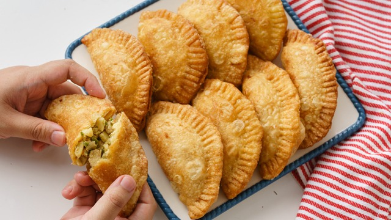

Empanada

Description
This beef empanada recipe is made with Goya Discos pastry rounds and a
mouthwatering filling of seasoned ground beef, tomatoes, onions, and garlic.
Enjoy these flaky, deep-fried empanadas as an appetizer, a main dish, or
even after your main course.
Ingredients
- 1 tablespoon Goya Extra Virgin Olive oil
- 1/2 pound ground beef
- 1/2 medium yellow onion, finely chopped
- 1/4 cup Goya Tomato sauce
- 6 Goya Spanish Olives Stuffed with Minced Pimientos, thinly sliced
- 2 tablespoons Goya Sofrito
- 1 packet Sazon Goya with Coriander and Annatto
- 1 teaspoon Goya Minced Garlic
- 1.2 teaspoon Goya Dried Oregano
- Goya Ground Black Pepper, to taste
- 1 package yellow or white Goya Discos empanada discs, thawed
- 1 quart Goya Corn Oil, for frying
Steps
- Heat olive oil in a large skillet over medium heat. Add ground beef;
cook and stir until browned and crumbly, about 10 minutes. Add onions
and cook until soft, about 5 minutes.
- Stir in tomato sauce, olives, sofrito, sazón, garlic, oregano, and pepper.
Reduce the heat to medium-low and simmer until mixture thickens, about 15
minutes.
- Roll empanada disks on a lightly floured surface until 1/2 inch larger in
diameter. Spoon about 1 tablespoon meat mixture into the middle of each disk.
Moisten the disk edges with water, fold in half over filling to form a
half-moon, and pinch to seal (or seal with a fork).
- Heat 2 1/2 inches corn oil in a deep-fryer or large saucepan to 350 degrees F
(175 degrees C). Working in batches, fry empanadas until crisp and golden brown,
flipping once, 4 to 6 minutes.
- Transfer to paper towels to drain. Enjoy!